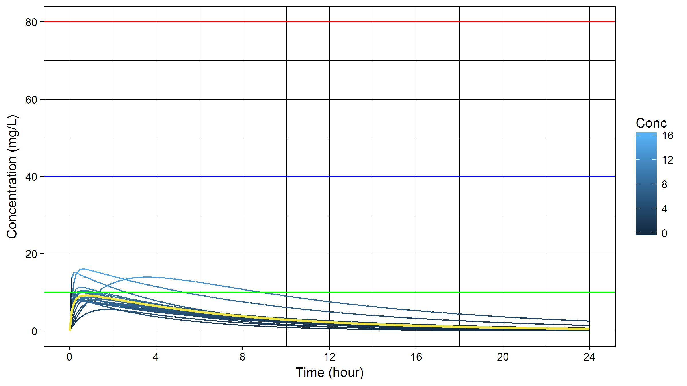
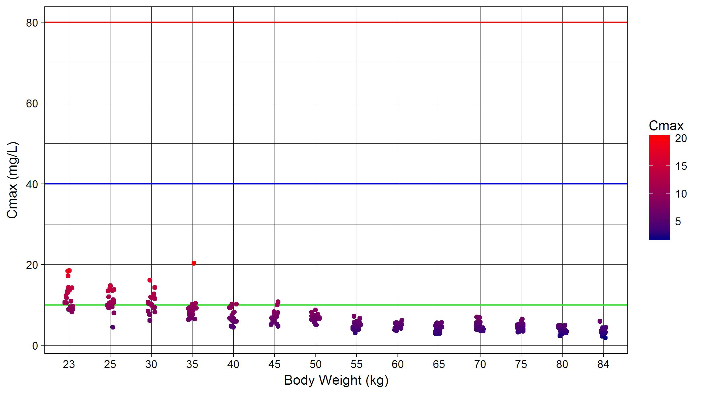

Caffeine Concentration Simulation https://www.edison.re.kr/web/cmed/run_simulationCaffeine Concentration Predictor shiny app. https://asan.shinyapps.io/caffCaffeine Concentration Simulation is open to everyone. We are happy to take your input. Please fork the repo, modify the codes and submit a pull request. https://github.com/shanmdphd/CaffeineEdisonSimulation Condition
Simulation is shown in \@ref(tab:SimulationCondition).
| Input | Value | Unit |
|---|---|---|
| Body Weight | 30 | kg |
| Caffeine Dose | 250 | mg |
| Simulation Subject N | 20 | |
| Log Y-axis | FALSE | |
| Plot Format | Jitter | |
| Multiple Dosing Interval | 12 | hour |
| Multiple Dosing | 5 | times |
Pharmacokinetic Parameters
The pharmacokinetic parameters from the paper [1] were derived and used in the app as follows:
\[ \begin{split} \begin{bmatrix} \eta_1\\ \eta_2\\ \eta_3 \end{bmatrix} & \sim MVN \bigg( \begin{bmatrix} 0\\ 0\\ 0 \end{bmatrix} , \begin{bmatrix} 0.1599 & 6.095 \cdot 10^{-2} & 9.650 \cdot 10^{-2}\\ 6.095 \cdot 10^{-2} & 4.746 \cdot 10^{-2} & 1.359 \cdot 10^{-2}\\ 9.650 \cdot 10^{-2} & 1.359 \cdot 10^{-2} & 1.004 \end{bmatrix} \bigg) \end{split} \]
\[ \begin{split} CL\ (mg/L) &= 0.09792 \cdot W \cdot e^{\eta1}\\ V\ (L) &= 0.7219 \cdot W \cdot e^{\eta2}\\ k_a\ (1/hr) &= 4.268 \cdot e^{\eta3} \end{split} \]
\[ \begin{split} k\ (1/hr) & = \frac{CL}{V}\\ t_{1/2}\ (hr) & = \frac{0.693}{k}\\ t_{max}\ (hr) & = \frac{ln(k_a) - ln(k)}{k_a - k}\\ C_{max}\ (mg/L) & = \frac{Dose}{V} \cdot \frac{k_a}{k_a - k} \cdot (e^{-k \cdot t_{max}} - e^{-k_a \cdot t_{max}})\\ AUC\ (mg \cdot hr / L) & = \frac{Dose}{CL}\\ \\ C_{av,ss} & = \frac{Dose}{CL \cdot \tau}\\ AI & = \frac{1}{1-e^{-k_e \cdot \tau}}\\ \end{split} \]
(Abbreviation: \(AI\), accumulation index; \(AUC\), area under the plasma drug concentration-time curve; \(CL\), total clearance of drug from plasma; \(C_{av,ss}\), average drug concentration in plasma during a dosing interval at steady state on administering a fixed dose at equal dosing intervals; \(C_{max}\), highest drug concentration observed in plasma; \(MVN\), multivariate normal distribution; \(V\), Volume of distribution (apparent) based on drug concentration in plasma; \(W\), body weight (kg); \(\eta\), interindividual random variability parameter; \(k\), elimination rate constant; \(k_a\), absorption rate constant; \(\tau\), dosing interval; \(t_{1/2}\), elimination half-life)

Reference range
| Parameter | median | sd | min | Q0.25 | mean | Q0.75 | max | |
|---|---|---|---|---|---|---|---|---|
| 1 | T~max~ (hr) | 0.6 | 0.5 | 0.2 | 0.4 | 0.8 | 1.0 | 2.3 |
| 2 | C~max~ (mg/L) | 10.2 | 2.4 | 6.8 | 8.6 | 10.4 | 11.9 | 14.7 |
| 3 | AUC (mg*hr/L) | 79.0 | 34.5 | 40.5 | 55.7 | 84.9 | 107.9 | 172.1 |
| 4 | Half-life (hr) | 4.9 | 1.4 | 2.6 | 3.8 | 4.9 | 5.7 | 8.2 |
| 5 | CL (L/hr) | 3.2 | 1.3 | 1.5 | 2.3 | 3.4 | 4.5 | 6.2 |
| 6 | V (L) | 21.9 | 4.5 | 16.3 | 19.1 | 22.2 | 24.7 | 35.0 |
| 7 | K~a~ (1/hr) | 6.3 | 6.3 | 1.0 | 3.2 | 8.1 | 11.0 | 23.6 |
| 8 | K~e~ (1/hr) | 0.1 | 0.0 | 0.1 | 0.1 | 0.2 | 0.2 | 0.3 |

Reference range
| Parameter | median | sd | min | Q0.25 | mean | Q0.75 | max | |
|---|---|---|---|---|---|---|---|---|
| 1 | T~max,single~ (hr) | 0.9 | 1.8 | 0.2 | 0.5 | 1.4 | 1.7 | 8.4 |
| 2 | C~max,single~ (mg/L) | 11.9 | 2.8 | 4.0 | 10.1 | 11.3 | 12.8 | 17.0 |
| 3 | AUC~single~ (mg*hr/L) | 92.5 | 29.8 | 60.1 | 73.3 | 98.8 | 124.0 | 161.7 |
| 4 | R~ac~ (1/hr) | 1.3 | 0.2 | 1.1 | 1.1 | 1.3 | 1.4 | 1.6 |
| 5 | A~av,ss~ (mg) | 158.4 | 47.3 | 87.0 | 112.9 | 158.8 | 185.3 | 265.0 |
| 6 | C~av,ss~ (mg/L) | 7.7 | 2.5 | 5.0 | 6.1 | 8.2 | 10.3 | 13.5 |
| 7 | C~max,ss~ (mg/L) | 16.6 | 3.0 | 11.7 | 14.8 | 16.6 | 18.8 | 21.2 |
| 8 | C~min,ss~ (mg/L) | 3.3 | 2.0 | 0.9 | 1.8 | 3.5 | 4.8 | 8.1 |
The main idea and intellectual resources were mainly provided by Professor Kyun-Seop Bae k@acr.kr.
This work is solely dependent on the interesting paper published in Eur J Pediatr in 2015.
R Packages
Caffeine Concentration Simulation Edison Science App developer: Sungpil Han shan@acp.kr / https://shanmdphd.github.io